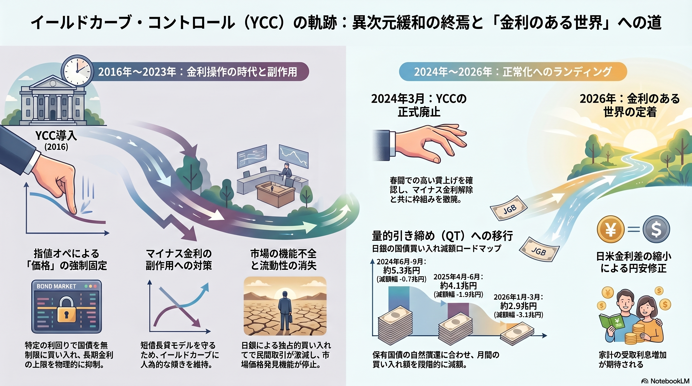

2016年〜2023年：金利操作の時代
● 指値オペによる「価格」の強制固定
特定の利回りで国債を無制限に買い入れる「指値オペ」により、長期金利の上限を物理的に抑え込みました[cite: 4]。
● マイナス金利の副作用対策
銀行の「短借長貸」モデルを守るため、イールドカーブに人為的な傾きを維持させ、金融システムの安定を図りました[cite: 4]。
● 市場の機能不全
日銀による独占的な買い入れの結果、民間取引が激減し、市場価格発見機能が停止する副作用が生じました[cite: 4]。
2024年〜2026年：正常化への歩み
● 2024年3月：YCCの正式廃止
春闘での高い賃上げを確認し、マイナス金利解除と共に8年に及ぶYCCの枠組みを撤廃しました[cite: 4]。
● 量的引き締め（QT）への移行
保有国債の自然償還に合わせ、月間の買い入れ額を段階的に減額。2026年3月までに月間約3兆円規模への半減を目指すロードマップを提示しています[cite: 4]。
● 2026年：金利のある世界の定着
日米金利差の縮小による円安修正や、家計の受取利息増加など、経済の「正常化」が期待されます[cite: 4]。